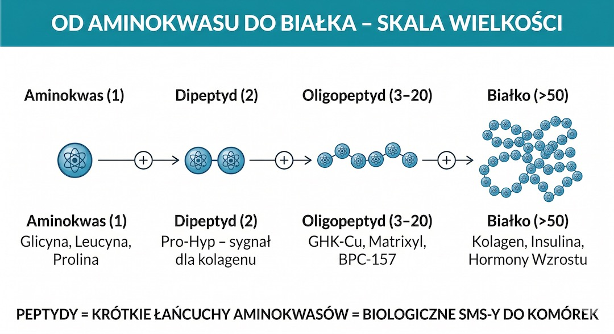
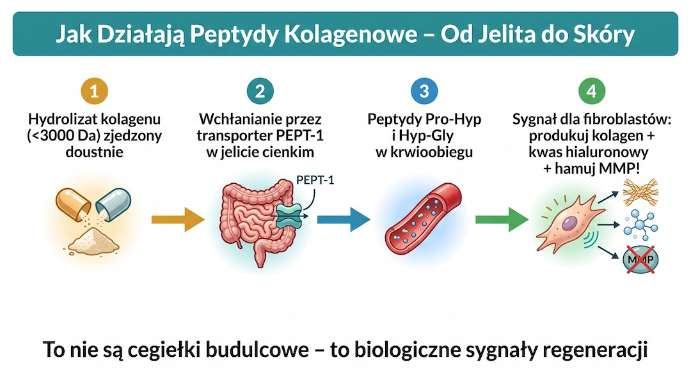
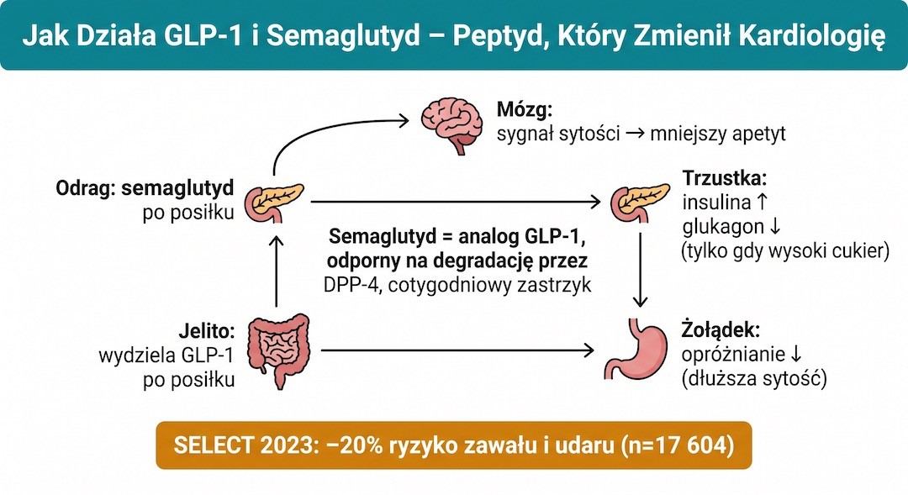
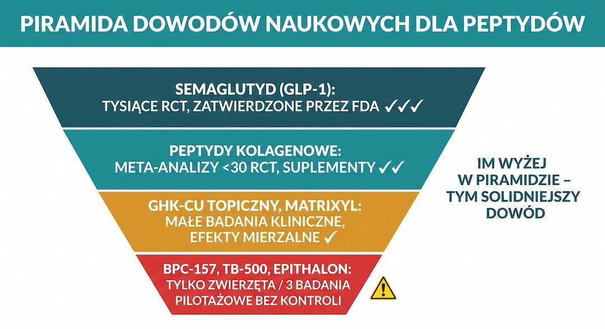
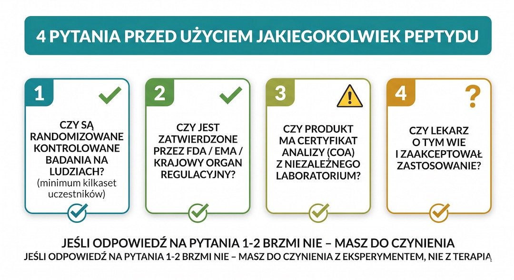

Peptydy to maleńkie łańcuchy aminokwasów, które pełnią w organizmie funkcję sygnałową – są biochemicznymi posłańcami mówiącymi komórkom, co mają robić. Choć insulina i hormony wzrostu to znane od dekad leki peptydowe, prawdziwa rewolucja nadeszła wraz z semaglutydem (GLP-1), który odmienił kardiologię. Jednak świat peptydów to dziś spektrum: od bezpiecznych peptydów kolagenowych, przez potężne leki na receptę, aż po „szarą strefę” eksperymentalnych substancji jak BPC-157 czy Epithalon. Dla osoby po 50-tce zrozumienie tej różnicy jest kluczowe – niektóre z nich mogą cofnąć biologiczny zegar Twojej skóry i stawów, inne zaś stanowią niebezpieczny eksperyment bez gwarancji bezpieczeństwa.
Kluczowe wnioski
- Peptydy to krótkie łańcuchy aminokwasów pełniące funkcję biologicznych posłańców sygnałowych w organizmie.
- Niskocząsteczkowe peptydy kolagenowe (<3000 Da) to najlepiej przebadana kategoria suplementów na skórę i stawy po 50-tce.
- Semaglutyd (GLP-1) to przełomowy lek peptydowy na receptę, który chroni serce i leczy otyłość metaboliczną.
- Peptydy regeneracyjne jak BPC-157 pozostają w „szarej strefie” ze względu na brak badań klinicznych na ludziach i restrykcje FDA.
Peptydy: co to jest i dlaczego rządzą Twoim ciałem?
Peptydy to krótkie łańcuchy aminokwasów (zwykle 2-50 jednostek), które działają jak biochemiczne „SMS-y” wysyłane do komórek. Zamiast budować tkanki jak klasyczne białka, przekazują sygnał: uruchom naprawę, reguluj apetyt albo wesprzyj gospodarkę cukrową. To ważny element planu zdrowia i sprawności po 50. roku życia.
Z wiekiem naturalna produkcja wielu kluczowych peptydów (jak kolagen czy hormony wzrostu) drastycznie spada, co przyspiesza procesy starzenia. Jeśli chcesz lepiej zrozumieć, jak to wpływa na codzienne zdrowie, zobacz także dział Zdrowie. Nowoczesna medycyna potrafi dziś syntetyzować te cząsteczki w laboratorium, tworząc albo dokładne kopie ludzkich hormonów, albo ich ulepszone wersje (analogi).
Wniosek praktyczny: Peptydy to nie „chemia”, ale biologia sygnałowa – zrozumienie, który „SMS” jest bezpieczny, a który eksperymentalny, to fundament nowoczesnego zdrowia po 50-tce.

Kolagen i sygnały: jedyne peptydy z twardymi dowodami po 50-tce
Peptydy kolagenowe (hydrolizat o masie To ważny element planu zdrowia i sprawności po 50. roku życia. To ważny element planu zdrowia i sprawności po 50. roku życia. To ważny element planu zdrowia i sprawności po 50. roku życia.
Dla osób po pięćdziesiątce, które straciły już ok. 25-30% całkowitego zasobu kolagenu, suplementacja 10-15 g hydrolizatu dziennie przynosi mierzalne efekty: poprawę nawilżenia skóry o ok. 20% i redukcję dolegliwości stawowych. Ważne jest jednak, by wybierać surowce o udowodnionej masie cząsteczkowej – tylko małe fragmenty są w stanie „oszukać” układ trawienny i zadziałać systemowo, zamiast zostać rozbitym na zwykłe aminokwasy.
Wniosek praktyczny: Codzienna dawka 10-15 g wysokiej jakości peptydów kolagenowych to najprostszy i najbezpieczniejszy sposób na wsparcie regeneracji tkanki łącznej po 50-tce.

Semaglutyd (GLP-1): jak peptydy zmieniły kardiologię
Semaglutyd to syntetyczny analog naturalnego peptydu GLP-1, który zmienił leczenie otyłości i prewencję sercowo-naczyniową. W badaniu SELECT odnotowano 20% redukcji ryzyka ciężkich incydentów sercowo-naczyniowych u osób z nadwagą i chorobą serca. To ważny element planu zdrowia i sprawności po 50. roku życia.
W przeciwieństwie do eksperymentalnych substancji z internetu, semaglutyd przeszedł pełną ścieżkę badań na dziesiątkach tysięcy pacjentów. To lek na receptę, który pod opieką lekarza może poprawić parametry metaboliczne u osób 50+. Uzupełniająco warto zadbać też o ruch i sen, dlatego sprawdź praktyczne wskazówki w dziale Rusz się.
Wniosek praktyczny: Jeśli zmagasz się z nadwagą i insulinoopornością, rozmowa z lekarzem o agonistach GLP-1 (semaglutydzie) to krok w stronę nowoczesnej prewencji zawałów.

Szara strefa (BPC-157, TB-500): rewolucja czy ryzykowne eksperymenty?
BPC-157 i TB-500 to najgłośniejsze peptydy „szarej strefy”. Mimo obiecujących wyników na zwierzętach, do 2026 roku nie mają solidnych badań klinicznych na ludziach. Dlatego ich stosowanie pozostaje eksperymentem o niepewnym profilu bezpieczeństwa. To ważny element planu zdrowia i sprawności po 50. roku życia.
Osoby po 50-tce powinny zachować szczególną ostrożność wobec tych substancji. Fakt, że coś naprawiło ścięgno szczura w 7 dni, nie oznacza, że jest bezpieczne dla człowieka z bagażem doświadczeń biologicznych. Rynek internetowy jest pełen produktów o nieznanej czystości i stężeniu. Bezpieczeństwo iniekcji substancji „do celów badawczych” (research only) jest zerowe – dopóki nie zobaczymy badań fazy III na ludziach, BPC-157 pozostaje fascynującym, ale groźnym znakiem zapytania. Kontekst profilaktyki po 50 znajdziesz też w artykule Badania po 50.
Wniosek praktyczny: Nie bądź królikiem doświadczalnym – dopóki „cudowne peptydy” nie przejdą testów na ludziach, skup się na metodach o udowodnionym profilu bezpieczeństwa.

Kosmetyki i GHK-Cu: jak peptydy regenerują skórę od zewnątrz
Peptydy kosmetyczne, takie jak tripeptyd miedziany (GHK-Cu) czy Matrixyl, to jedne z najskuteczniejszych składników przeciwstarzeniowych stosowanych miejscowo. GHK-Cu jest naturalnie występującym peptydem, którego poziom w osoczu spada o 60% między 20. a 60. rokiem życia. Stosowany w serum, potrafi aktywować geny odpowiedzialne za naprawę tkanek, stymulując produkcję kolagenu IV i elastyny znacznie silniej niż witamina C czy retinol.
Inne popularne neuropeptydy, jak Argireline, działają jak „botoks w kremie” – łagodnie hamują mikro-skurcze mięśni twarzy, wygładzając zmarszczki mimiczne bez efektu maski. W pielęgnacji po 50-tce kluczowe jest jednak stężenie – wiele drogeryjnych produktów zawiera jedynie śladowe ilości peptydów. Szukaj formulacji o klinicznie potwierdzonych stężeniach (np. 1-2% dla GHK-Cu), które faktycznie są w stanie przeniknąć barierę naskórkową i wysłać sygnał regeneracyjny do głębszych warstw skóry.
Wniosek praktyczny: Inwestycja w dobre serum z peptydami miedziowymi to najskuteczniejszy, nieinwazyjny sposób na poprawę gęstości skóry i wyrównanie jej struktury.
Bezpieczeństwo i drogi podania: jak nie dać się nabrać na „hype”
Skuteczność peptydu zależy od sposobu podania. Większość takich cząsteczek jest szybko rozkładana w przewodzie pokarmowym, dlatego część terapii wymaga iniekcji podskórnych. Wyjątkiem są specjalnie zaprojektowane formy doustne oraz niskocząsteczkowe peptydy kolagenowe. To ważny element planu zdrowia i sprawności po 50. roku życia.
Przed zakupem jakiegokolwiek produktu peptydowego zadaj sobie trzy pytania: czy są badania na ludziach, czy forma podania ma sens biologiczny i czy źródło jest legalne. Dla wsparcia codziennych nawyków żywieniowych zajrzyj też do działu Jedzenie, a dla pełnego kontekstu stylu życia do sekcji Ciekawe.
Wniosek praktyczny: Unikaj peptydów doustnych, które „powinny” być w zastrzykach, i zawsze konsultuj innowacyjne terapie z lekarzem medycyny longevity.

Najczęściej zadawane pytania
Czy BPC-157 jest bezpieczny dla ludzi?
Z naukowego punktu widzenia – nie wiemy. Mimo tysięcy entuzjastycznych opinii w internecie, do 2026 roku nie przeprowadzono ani jednego dużego, randomizowanego badania klinicznego BPC-157 na ludziach. FDA i WADA zakazały jego stosowania ze względu na brak danych o toksyczności długoterminowej i teoretyczne ryzyko stymulowania wzrostu nowotworów (przez proces angiogenezy). Każdy, kto go stosuje, bierze udział w nieformalnym eksperymencie na samym sobie.
Czy kolagen w proszku to naprawdę peptydy?
Tak, większość dobrych suplementów kolagenowych to tzw. hydrolizat kolagenu, czyli właśnie peptydy. Kluczem jest jednak ich wielkość (masa cząsteczkowa). Tylko peptydy o masie poniżej 3000 daltonów (Da) są w stanie w dużym stopniu przeniknąć barierę jelitową i zadziałać regeneracyjnie. Szukaj produktów z oznaczeniem "niskocząsteczkowy" lub markowych surowców jak Verisol czy Peptan.
Dlaczego peptydy podaje się w zastrzykach?
Większość peptydów to łańcuchy aminokwasów, które nasz żołądek traktuje jak zwykłe jedzenie – trawi je i rozbija na pojedyncze cegiełki. Aby peptyd dotarł do komórek jako nienaruszony „SMS”, musi ominąć układ trawienny. Iniekcja podskórna to najskuteczniejszy sposób na dostarczenie tych cząsteczek bezpośrednio do krwioobiegu w formie aktywnej biologicznie.
Czy semaglutyd można stosować bez konsultacji z lekarzem?
Nie. Semaglutyd jest lekiem na receptę, a decyzja o terapii wymaga oceny lekarza, badań kontrolnych i monitorowania działań niepożądanych. Samodzielne używanie preparatów z niepewnego źródła zwiększa ryzyko powikłań i nie daje gwarancji jakości substancji.
Źródła
- New England Journal of Medicine - Semaglutide and Cardiovascular Outcomes in Obesity without Diabetes (SELECT)
- Nature Medicine - Oral ingestion of specific collagen peptide improves skin hydration and elasticity
- PubMed Central - Safety and efficacy evidence on therapeutic peptides
- U.S. Anti-Doping Agency (USADA) - BPC-157 peptide prohibited list explainer
- Scientific American - The science behind the peptide craze
- Atria Institute - Peptides for longevity overview
Uwaga: Artykuł ma charakter informacyjny i edukacyjny. Nie zastępuje konsultacji lekarskiej, diagnozy ani leczenia.